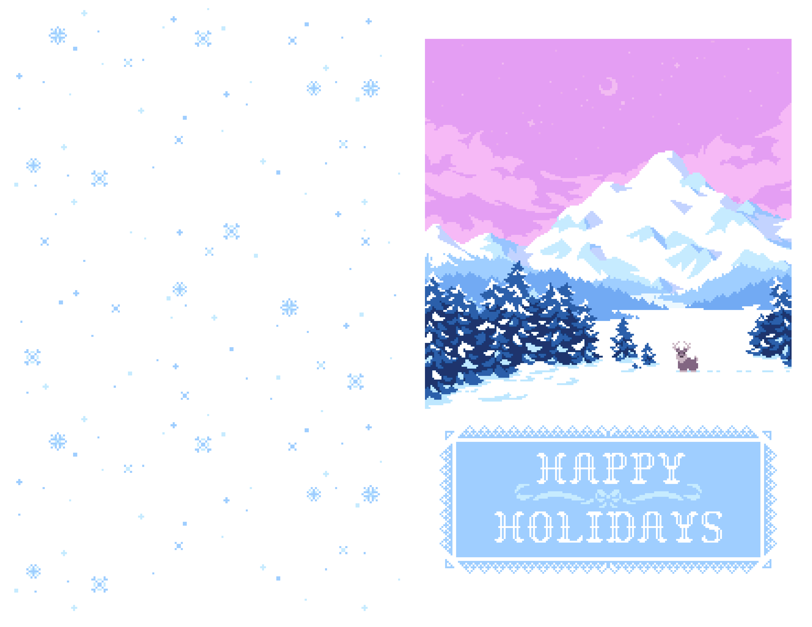
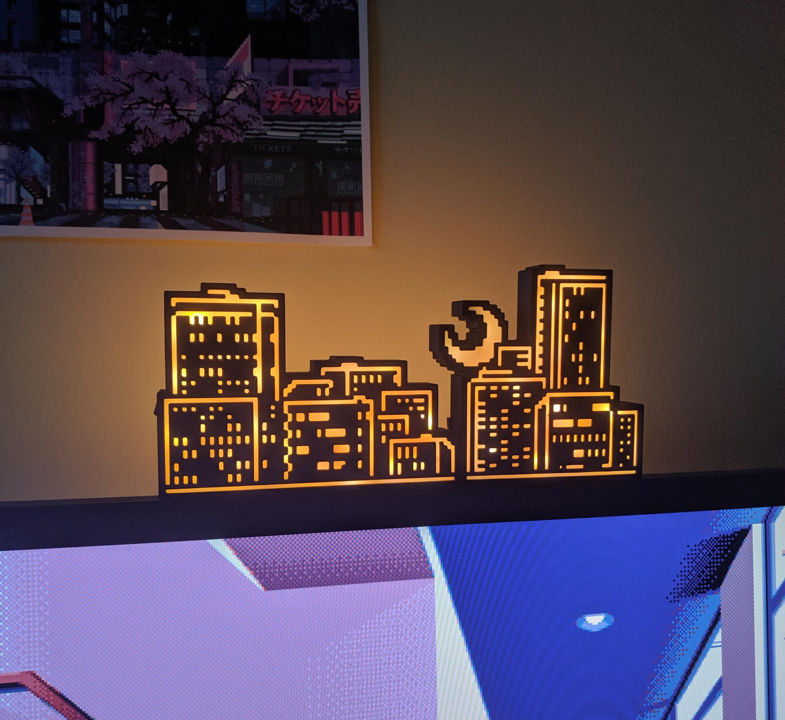
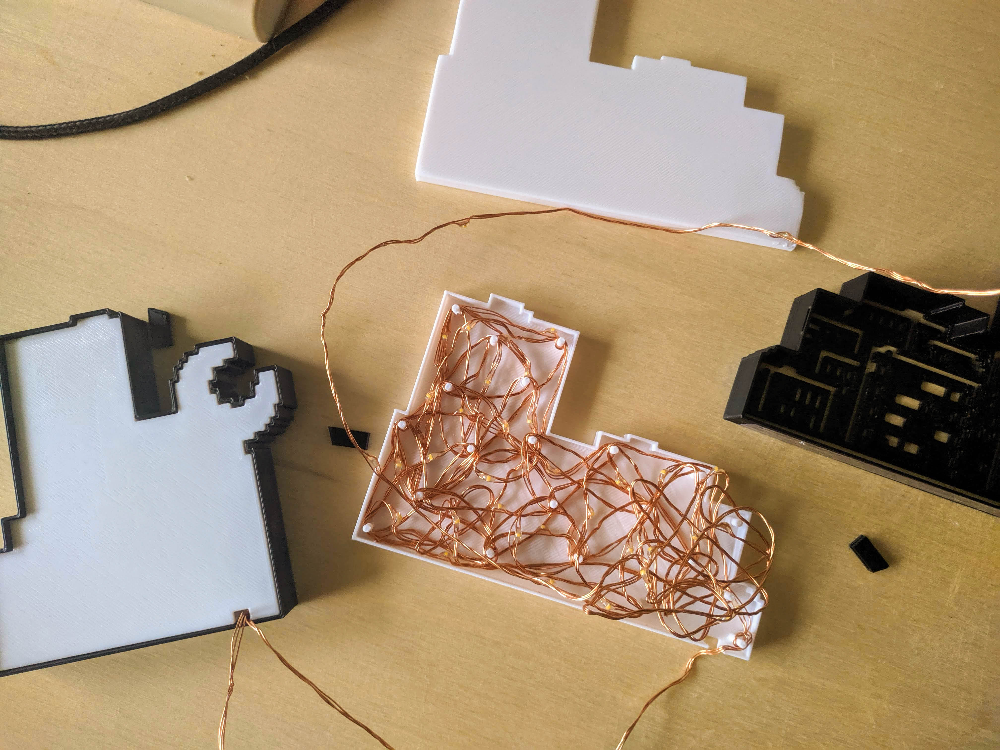
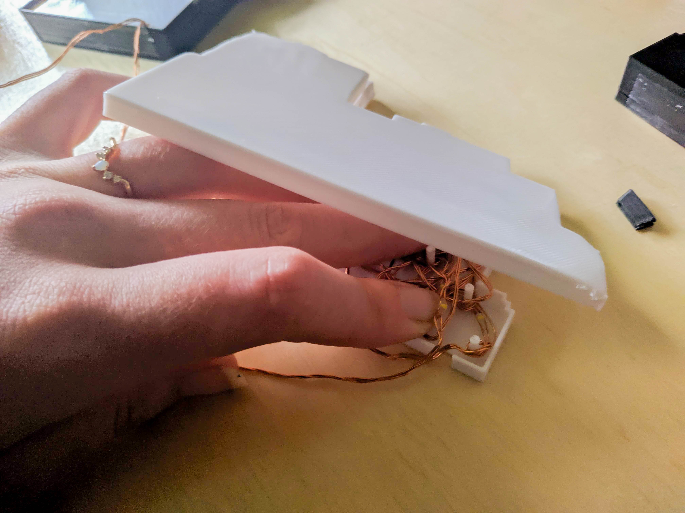
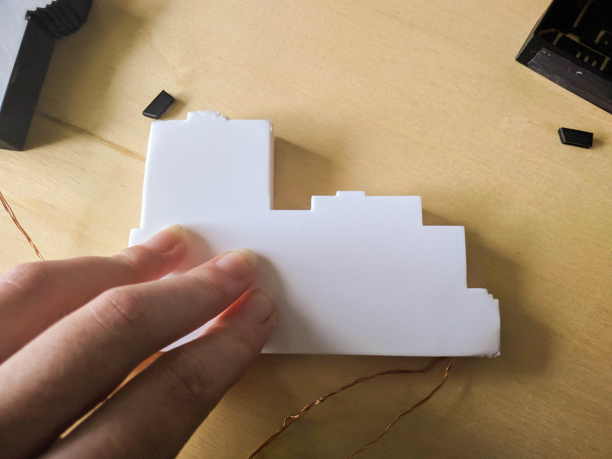
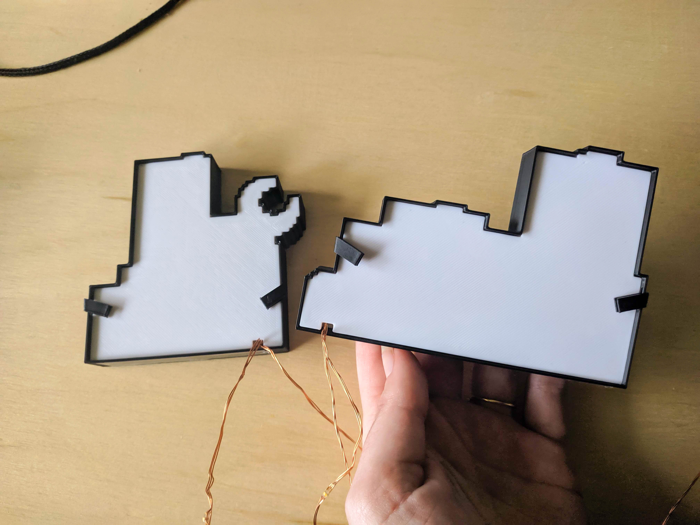
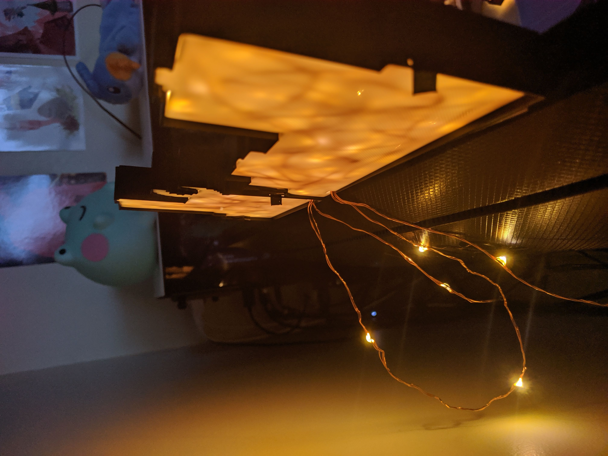
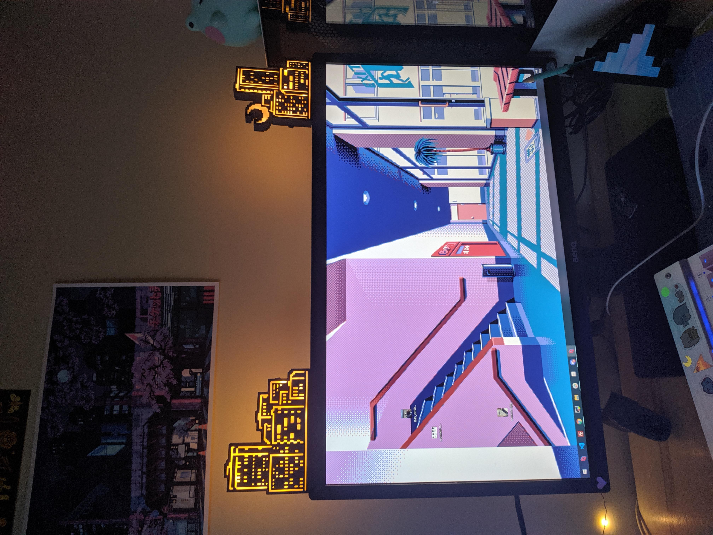
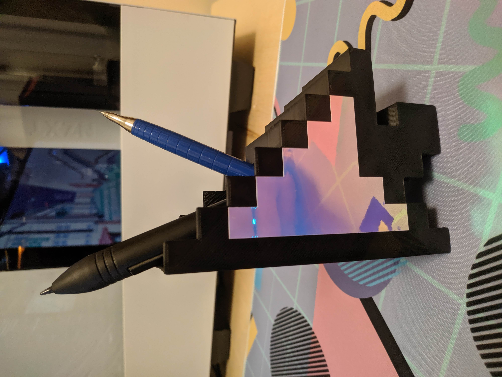
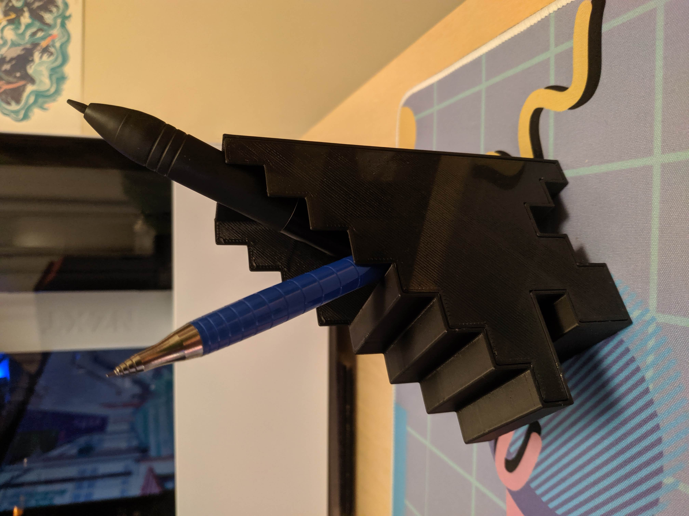

A big Happy Holidays from me to you! Here are some free to use diy projects/printables that I've made (personal/gift giving use only please!).
If you would like to support me making these things you could buy me a tea! But it's definitely not necassary :)
Holiday Card Printables - for 8.5"x 11" paper:

3D printable City Lamp:
Estimated print time: 7hrs at 0.28mm layer height (could reduce this with thicker layers if your printer can!)
Estimated assembly time: ~1hr
Materials:
- 5 or 10 meters of wire string lights (I used 10 but had wire leftover), if you can find string lights with less space in between the lights then it won't need to be as long! However, they all just seem to have the same spacing :( (I would prefer higher density ones)
- Two filament colours (e.g. black/white)
- Some hot glue if you want to fasten the clips better
Files:
- Export/slice these appropriately for your printer, a very low first layer speed is best for the front black pieces since they are highly detailed
- I've grouped these within this linked file to what you should print each run: ~ LINK ~
- I've left it as a tinkercad file so you can make adjustments if needed! (if you add it to your own library and ungroup everything you might be able to change specific things?) Don't print out the pink and brown example :P

Instructions:
- Print out all pieces! I recommend printing the black front pieces on a glass bed if you want a nice finish but it's tricky -- the little details may not stick well, with hairspray and very low first layer speed (~5mm/s) I have managed to get consistent results. This will really depend on your printer.
- Time to wrap the wire around the white pieces with poles. Starting with the usb end of your lights and leaving some extra wire at the start, wrap the wire around the poles -- there's no real 'best' way to do this but try and get as many lights in as you can and be gentle with the poles! Some may break but just be careful, they only act as a guide to make it easier to get consistent lighting within the lamp. For best results try not to cover the lights with their own wire, try to turn and face them up at you (towards the front of the lamp), and take note of the light distribution (i.e. try to space them out evenly). Towards the end it may be hard to keep the wire in place but you can kinda just shove them in and fit all the pieces together. This is the most finnicky part because no one seems to sell higher density string lights, if you can find some it would save you the trouble of dealing with all the extra wire!
- Between the two lamp pieces you can leave extra wire if you plan on placing them slightly apart
- Fit all the pieces together and keep them shut with the clips. You could even glue the clips in place for a more permanent seal.
- The lamp is fairly skinny so I recommend taping it to where you want it to sit
- Since the lamp is split into two parts you can get creative with its placement!
- Browse the photos below for visual examples of these steps






3D printable Mouse pen holder:
Estimated print time: 3hrs at 0.28mm layer height (could reduce this with thicker layers if your printer can!)
Estimated assembly time: ~15mins
Materials:
- Glue of your choice (I used E6000)
- Optional: sticker to place on front
Files:
- Export/slice these appropriately for your printer, I recommend printing on a glass surface if you want to put a sticker on it
- Tinkercad files: ~ LINK ~
Instructions:
- Print out both pieces
- Place glue around the inside edge of the larger piece, slot them together until the back is flush and let dry!

